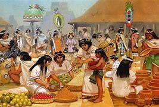

El pueblo náhuatl fue uno de los más grandes y poderosos de Mesoamérica, y su influencia se extendió a lo largo de una amplia región. Su cultura y organización social eran complejas y profundamente interrelacionadas con sus creencias religiosas, prácticas cotidianas y su entorno natural. A continuación, te proporciono los aspectos más destacados de su cultura y sociedad.
La sociedad náhuatl estaba organizada de forma jerárquica y estratificada. A la cabeza de la estructura social estaba el tlatoani, el líder supremo, que gobernaba sobre las ciudades y regiones, y era considerado un intermediario entre los dioses y los humanos. Debajo del tlatoani se encontraban distintas clases sociales:
Clases Sociales |
|
|
 |
Los náhuatl tenían una cosmovisión muy compleja y profundamente ligada al ciclo de la naturaleza, los astros y los dioses. Creían en un mundo dividido en varios niveles, donde existían diferentes esferas del cielo, la tierra y el inframundo, y cada uno estaba habitado por diversos dioses. Los principales aspectos de su cosmovisión incluyen:
La lengua náhuatl era hablada por una gran parte de Mesoamérica, especialmente en la región del Valle de México. Esta lengua,
aún hablada hoy en día en diversas comunidades, tenía una rica tradición oral y escrita.
Escritura: Los náhuatl desarrollaron un sistema de escritura pictográfica, donde se utilizaban símbolos e imágenes para representar
ideas, historias y conceptos. Estos símbolos fueron plasmados en códices, documentos hechos en papel de amate o piel, y utilizados
principalmente para registrar eventos históricos y religiosos.
El arte náhuatl reflejaba la importancia de la religión, la naturaleza y la política en la vida cotidiana. Su arte se caracterizó por:
Características: |
|
| |
La cultura y la sociedad náhuatl estuvieron marcadas por una profunda religiosidad, una organización jerárquica compleja, una rica tradición artística y un enfoque en el respeto a los dioses y la naturaleza. Su legado perdura no solo en la lengua, sino también en sus contribuciones al pensamiento, la tecnología, y la política de Mesoamérica, cuyo impacto sigue presente en muchas comunidades indígenas que conservan elementos de la tradición náhuatl hasta hoy.